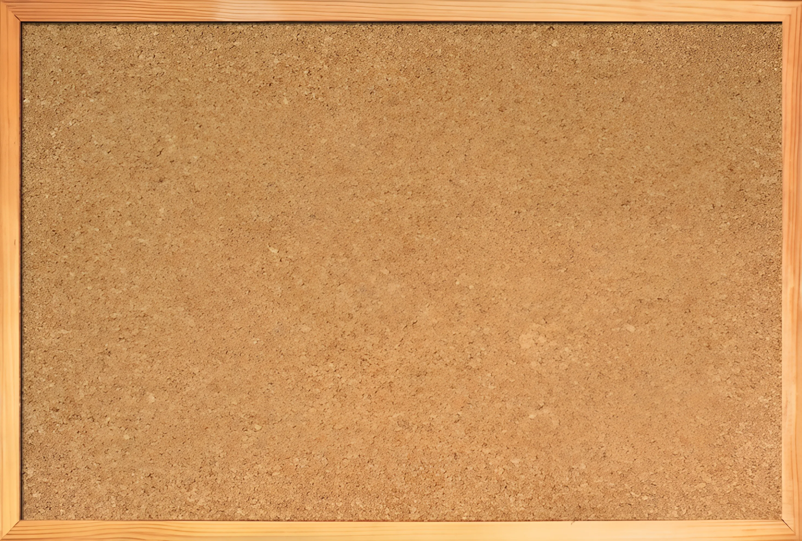
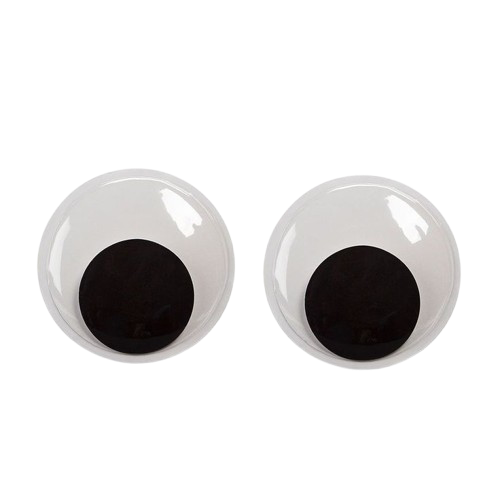

I'm Kimora Self, a passionate and aspiring coder with a keen interest in web development and programming. My journey into coding began with a curiosity about how websites and applications are built, leading me to explore various programming languages and technologies. I enjoy solving problems and creating functional, user-friendly digital experiences. As I continue to learn and grow in this field, I'm excited to take on new challenges and contribute to innovative projects.
Outside of coding I enjoy a variety of hobbies and interests. Music is a big part of my life, whether it's listening to it, singing, or playing instruments like the guitar and piano. I also have a passion for gaming, which not only serves as a fun pastime but also fuels my interest in game development. Additionally, I love reading fantasy novels that transport me to different worlds and spark my imagination. These interests not only provide balance in my life but also inspire my creativity in coding projects.